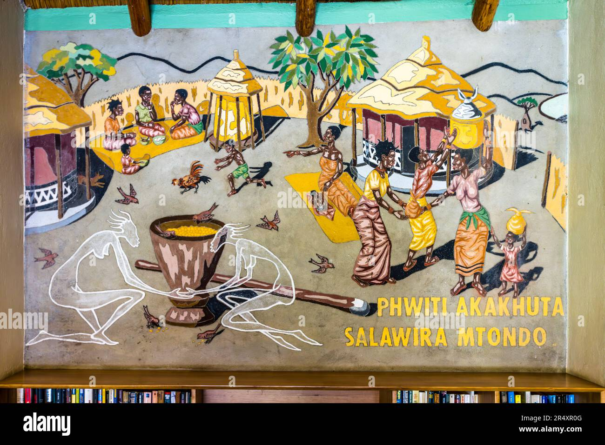
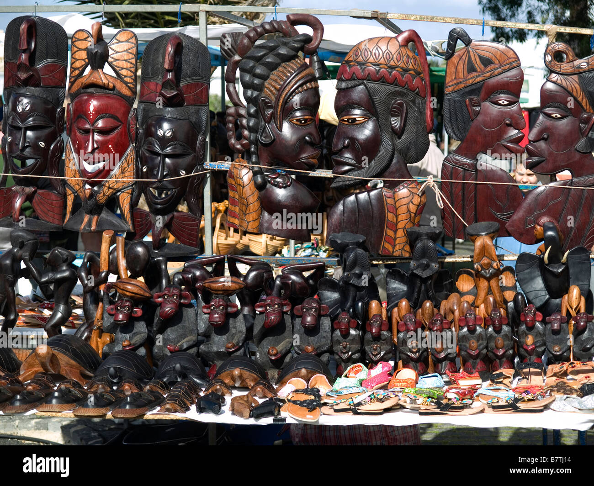

-

Traditional Malawian Painting
Traditional Malawian paintings are vibrant and symbolic, often depicting scenes of everyday life, cultural traditions, and wildlife. These artworks are deeply rooted in the country's rich heritage and are typically created using locally sourced materials. They are a reflection of Malawi's history and identity, serving as a means of storytelling and cultural preservation.
-

Handcrafted Wood Carving
Handcrafted wood carvings are a hallmark of Malawian art, renowned for their intricate designs and cultural motifs. Popular items include masks, figurines, and functional objects like bowls or chairs. These carvings are often created by skilled artisans using indigenous woods, such as ebony or mahogany, and symbolize the creativity and craftsmanship of Malawian communities.
-
 Nsima with Relish
Nsima with Relish
Nsima, a staple food in Malawi, is made from maize flour and water. It is typically served with a variety of relishes, such as vegetables, fish, or meat, providing a nutritious and satisfying meal. Nsima holds a central place in Malawian cuisine and culture, symbolizing unity and hospitality as it is often shared during family meals and communal gatherings.